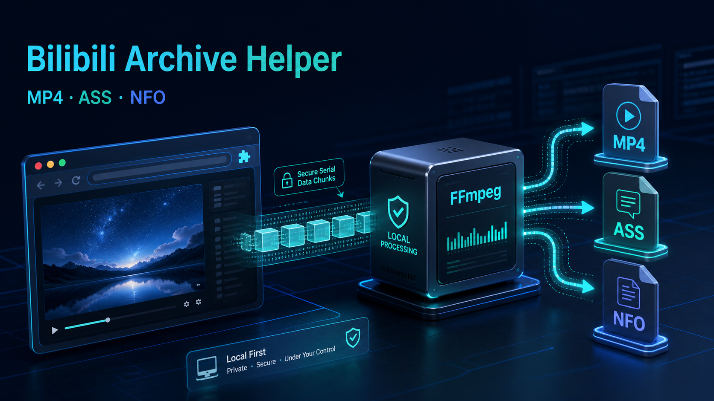

Account-aware quality
Uses the active Bilibili session and selects the highest stream that account can access.
Save the highest quality your account can access, merge DASH streams locally, recover richer danmaku history, and keep only MP4, ASS, and NFO.
SHA-256394BEDE39D9D845C97A3DF5967E88D6FBCFFCF61919A554C15C73AE9EE1C1101

Built for durable archives
Uses the active Bilibili session and selects the highest stream that account can access.
Combines legacy XML, current protobuf segments, and optional historical snapshots.
Preserves IDs, episode relationships, artwork, statistics, tags, rights, and stream properties.
A small, useful result
Archive paths use IDs such as Bilibili_BV1QVQRYVE96_P01_1080P. Original-language titles remain inside the subtitle and metadata.
Lossless DASH mux with verified video and audio streams.
Scrolling, top, bottom, color, and font-size attributes preserved.
Ready for Kodi, Emby, and Jellyfin, with a detailed Bilibili extension block.
What gets preserved
Cross-platform setup
No build step is required. The installers stay in your user account and provide automatic or manual FFmpeg guidance.
install-native-host.cmd
Double-click the installer. If FFmpeg is missing, it can offer WinGet installation.
sh install-native-host.sh
Uses Python 3 and can guide Homebrew installation for missing dependencies.
sh install-native-host.sh
Supports APT, DNF, Pacman, Zypper, and APK, plus common folder pickers.
Extract the ZIP, open chrome://extensions/, enable Developer mode, and load the unpacked folder.
Run the native-host installer for your operating system.
Reload the extension, open a Bilibili playback page, and click the extension icon.
A clear network boundary
Bilibili API and media requests follow the current Chrome login, proxy, PAC, and SwitchyOmega configuration—even when it differs from the system proxy.
The helper receives already-downloaded chunks, writes .part files, runs FFmpeg and ffprobe, then removes sources only after validation.
The extension does not read, display, or export cookie values and never changes browser, system, or Codex proxy settings.
FAQ
The extension requests the highest stream available to the current signed-in account. Some qualities require login or membership, and the extension does not bypass those restrictions.
The save page stops with installation guidance instead of silently leaving raw fragments. Installers can automate supported package managers or show manual commands.
No. The extension merges every accessible source it can query, but comments already removed by the server cannot be restored.
Complete source streams are retained to prevent data loss. After a successful ffprobe validation, the intermediate streams are deleted.
Current release
Download version 0.5.2, verify the checksum, and load the unpacked extension.